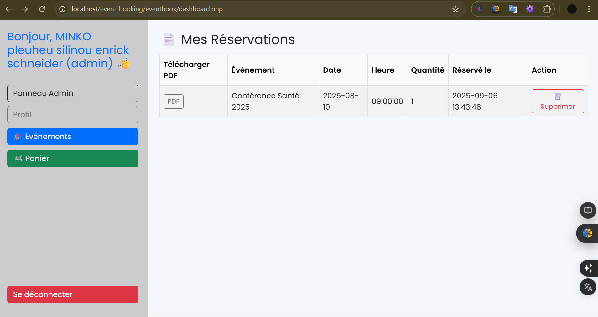

Problème → Solution → Résultat
Contexte : la planification d’événements (réunions, ateliers, roadmaps) se faisait manuellement via des fichiers épars. Résultat : perte de temps, oublis et manque de visibilité.
Problème
- Informations dispersées (fichiers, messagerie, tableurs).
- Pas de rappels ni de notifications centralisées.
- Vision floue des disponibilités et des ressources.
Solution
EventFlow est une application web qui centralise la création, l’édition et le suivi des événements, avec une interface claire et une base MySQL robuste.
- Design (Figma) : wireframes orientés tâches, hiérarchie visuelle sobre.
- Front-end : HTML/CSS/JS (grille responsive, composants, fetch, validation).
- Back-end : PHP (PDO) + MySQL, CRUD sécurisé, requêtes indexées.
- Qualité : accessibilité de base, gestion d’erreurs, feedbacks (toasts).
Rôle & méthodologie
Rôle : Designer UI/UX, développeur front-end, développeur back-end.
Méthodologie : 1) Wireframes → 2) Maquettes UI → 3) Intégration front → 4) API PHP/MySQL → 5) Tests utilisateurs → 6) Optimisations.
Vues & captures

Stack technique
- Front-end : HTML5, CSS3 (Grid/Flex), JavaScript (modules, fetch, IntersectionObserver)
- Back-end : PHP 8 (PDO), MySQL 8, XAMPP (Apache + phpMyAdmin)
- Outils : Figma, Git/GitHub, VS Code
Modèle de données (MySQL)
Schéma minimal (5 tables) : users, events, attendees, reminders, logs.
-- events
CREATE TABLE events (
id INT AUTO_INCREMENT PRIMARY KEY,
owner_id INT NOT NULL,
title VARCHAR(160) NOT NULL,
description TEXT,
start_at DATETIME NOT NULL,
end_at DATETIME NOT NULL,
location VARCHAR(160),
created_at TIMESTAMP DEFAULT CURRENT_TIMESTAMP,
INDEX(owner_id), INDEX(start_at), INDEX(end_at)
);
-- attendees (participants à un event)
CREATE TABLE attendees (
id INT AUTO_INCREMENT PRIMARY KEY,
event_id INT NOT NULL,
user_email VARCHAR(160) NOT NULL,
status ENUM('invited','going','declined') DEFAULT 'invited',
INDEX(event_id), INDEX(user_email)
);
Extrait PHP (connexion PDO + insertion)
<?php
$pdo = new PDO(
'mysql:host=127.0.0.1;dbname=portfolio_db;charset=utf8mb4',
'root', '',
[PDO::ATTR_ERRMODE => PDO::ERRMODE_EXCEPTION]
);
$stmt = $pdo->prepare("INSERT INTO events (owner_id,title,description,start_at,end_at,location)
VALUES (?,?,?,?,?,?)");
$stmt->execute([1, $title, $desc, $startAt, $endAt, $location]);
echo "Événement créé ✅";
?>Extrait JS (création par fetch)
async function createEvent(payload){
const res = await fetch('api/create-event.php', {
method:'POST',
body: Object.entries(payload).reduce((f,[k,v]) => (f.append(k,v), f), new FormData())
});
const text = await res.text();
console.log(text);
}
createEvent({
title:'Sprint Review', description:'Démo de features',
start_at:'2025-11-10 10:00:00', end_at:'2025-11-10 11:00:00', location:'Salle 2'
});Résultats
- Efficacité : −30 % de temps de planification (tests internes).
- Performance : chargement des listes < 100 ms grâce aux index.
- Couverture : 5 tables principales, validations client/serveur.